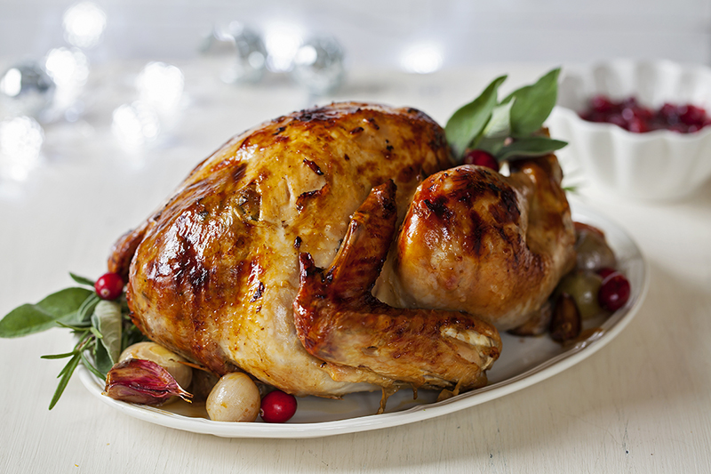

Roasted Turkey

- Yield: 8 servings
- Prep: 30 min
- Total: 3 hr 20 min
Ingredients
- 1/4 pound butter
- 1 lemon, zested and juiced
- 1 tsp chopped thyme leaves
- 1 fresh turkey
- Kosher salt
- Black pepper
- 1 large bunch fresh thyme
- 1 whole lemon, halved
- 1 Spanish onion, quartered
- 1 head garlic, halved crosswise
Directions
-
Preheat oven to 350 degrees.
-
Melt buttter in small saucepan. Add zest
and juice of the lemon and 1 tsp of thyme
leaves to the butter mixture. set aside.
-
Take giblets out of turkey and wash the turkey
inside out. Remove excess fat and leftover
pinfeathers and pat the outside dry. Place
tuekyin a large roasting pan. Liberally salt
and pepper the inside of the turkey cavity.
Stuff the cavity with the bunch of thyme, halved
lemon, quartered onion, and the garlic. Brush the
outside of the turkey with the butter mixture and
sprinkle with salt and pepper. Tie the legs together
with string and tuck the wing tips under the body
of the turkey.
-
Roast the turkey about 2 1/2 hours, or until the
juices run clear when you cut between the leg and
the thigh. Remove the turkey to a cutting board and
cover with aluminum foil; let rest for 20 minutes.
-
Slice the turkey and serve.